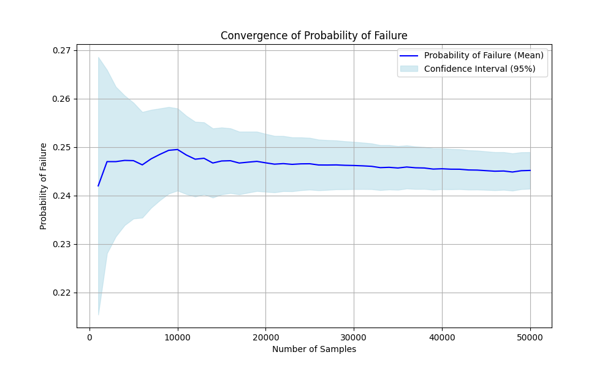

parepy_toolbox.common_library module#
Common library contains utility functions for PAREpy’s framework.
- beta_equation(pf)[source]#
Calculates the reliability index value for a given probability of failure (pf), using the inverse cumulative distribution function (ICDF) of the standard normal distribution.
- Parameters:
pf (float) – Probability of failure (pf).
- Returns:
Reliability index (β).
- Return type:
float
Example
>>> # pip install -U parepy-toolbox >>> from parepy_toolbox import beta_equation >>> pf = 2.32629e-04 >>> beta = beta_equation(pf) >>> print(f"Reliability index: {beta:.5f}") Reliability index: 3.50000
- calculate_weights(df, random_var_settings, random_var_settings_importance_sampling)[source]#
- Parameters:
df (DataFrame)
random_var_settings (list)
random_var_settings_importance_sampling (list)
- Return type:
DataFrame
- convergence_probability_failure(df, column)[source]#
Calculates the convergence rate of the probability of failure.
- Parameters:
df (DataFrame) – Random samples, objective function evaluations and indicator functions.
column (str) – Name of the column to be analyzed. Supported values:
"I_0","I_1", …,"I_n"where n is the number of limit state functions.
- Returns:
output[0] = Sample size, output[1] = Mean, output[2] = Lower confidence limit, output[3] = Upper confidence limit, output[4] = Variance.
- Return type:
tuple[list, list, list, list, list]
Example
>>> # pip install -U parepy-toolbox >>> import numpy as np >>> import matplotlib.pyplot as plt >>> from parepy_toolbox import sampling_algorithm_structural_analysis, common_library >>> >>> def obj(x): >>> return [12.5 * x[0]**3 - x[1]] >>> >>> d = {'type': 'normal', 'parameters': {'mean': 1., 'std': 0.1}} >>> l = {'type': 'normal', 'parameters': {'mean': 10., 'std': 1.}} >>> var = [d, l] >>> >>> df, pf, beta = sampling_algorithm_structural_analysis( ... obj, var, method='lhs', n_samples=50000, ... number_of_limit_functions=1, parallel=False, verbose=False ... ) >>> div, pf_mean, ci_lower, ci_upper, pf_var = common_library.convergence_probability_failure(df, 'I_0') >>> >>> print("Sample sizes considered at each step:", div) >>> print("Estimated probability of failure (mean):", pf_mean) >>> print("Lower confidence interval values:", ci_lower) >>> print("Upper confidence interval values:", ci_upper) >>> print("Variance values:", pf_var) >>> >>> plt.figure(figsize=(10, 6)) >>> plt.plot(div, pf_mean, label='Probability of Failure (Mean)', color='blue') >>> plt.fill_between(div, ci_lower, ci_upper, color='lightblue', alpha=0.5, label='Confidence Interval (95%)') >>> plt.xlabel('Number of Samples') >>> plt.ylabel('Probability of Failure') >>> plt.title('Convergence of Probability of Failure') >>> plt.legend() >>> plt.grid(True) >>> plt.savefig('convergence_probability_failure.png') >>> plt.show() Sample sizes considered at each step: [1000, 2000, 3000, 4000, 5000, 6000, 7000, 8000, 9000, 10000, 11000, 12000, 13000, 14000, 15000, 16000, 17000, 18000, 19000, 20000, 21000, 22000, 23000, 24000, 25000, 26000, 27000, 28000, 29000, 30000, 31000, 32000, 33000, 34000, 35000, 36000, 37000, 38000, 39000, 40000, 41000, 42000, 43000, 44000, 45000, 46000, 47000, 48000, 49000, 50000] Estimated probability of failure (mean): [np.float64(0.242), np.float64(0.247), np.float64(0.247), np.float64(0.24725), np.float64(0.2472), np.float64(0.24633333333333332), np.float64(0.24757142857142858), np.float64(0.2485), np.float64(0.24933333333333332), np.float64(0.2495), np.float64(0.24836363636363637), np.float64(0.2475), np.float64(0.24769230769230768), np.float64(0.24671428571428572), np.float64(0.24713333333333334), np.float64(0.2471875), np.float64(0.24670588235294116), np.float64(0.24688888888888888), np.float64(0.24705263157894736), np.float64(0.24675), np.float64(0.2464761904761905), np.float64(0.24659090909090908), np.float64(0.24643478260869564), np.float64(0.24654166666666666), np.float64(0.24656), np.float64(0.2463076923076923), np.float64(0.2462962962962963), np.float64(0.24632142857142858), np.float64(0.24624137931034482), np.float64(0.2462), np.float64(0.2461290322580645), np.float64(0.24603125), np.float64(0.24575757575757576), np.float64(0.24582352941176472), np.float64(0.24568571428571429), np.float64(0.24588888888888888), np.float64(0.24572972972972973), np.float64(0.24568421052631578), np.float64(0.24546153846153845), np.float64(0.245525), np.float64(0.2454390243902439), np.float64(0.24542857142857144), np.float64(0.24527906976744185), np.float64(0.24525), np.float64(0.24513333333333334), np.float64(0.2450217391304348), np.float64(0.24506382978723404), np.float64(0.24485416666666668), np.float64(0.24512244897959184), np.float64(0.24518)] Lower confidence interval values: [np.float64(0.21540903357963798), np.float64(0.228083068360113), np.float64(0.23155879695800996), np.float64(0.23387488924574903), np.float64(0.23523877319727374), np.float64(0.2354277842195651), np.float64(0.23745823999749613), np.float64(0.23902839339999074), np.float64(0.240393629754369), np.float64(0.24101732156483296), np.float64(0.24028817804264055), np.float64(0.23977745889759358), np.float64(0.24027087812793255), np.float64(0.2395723793872807), np.float64(0.24022971642358976), np.float64(0.2405026573074099), np.float64(0.24022492194668174), np.float64(0.24058899248018165), np.float64(0.24091942715838915), np.float64(0.24077458068625188), np.float64(0.24064697923770598), np.float64(0.24089485014120868), np.float64(0.24086513272715937), np.float64(0.24108850709933902), np.float64(0.24121689821472678), np.float64(0.24107016841955742), np.float64(0.24115677125173032), np.float64(0.24127435324748092), np.float64(0.24128263893287646), np.float64(0.24132489116477843), np.float64(0.24133367312548154), np.float64(0.24131205280692852), np.float64(0.24111218162959616), np.float64(0.2412465527840086), np.float64(0.24117545601885282), np.float64(0.24144048105524066), np.float64(0.241342810362619), np.float64(0.24135567423316676), np.float64(0.24119016788789038), np.float64(0.24130699633542), np.float64(0.24127327385658773), np.float64(0.24131277514874505), np.float64(0.2412122532337765), np.float64(0.24122982735611062), np.float64(0.24115872214389933), np.float64(0.24109117527801505), np.float64(0.24117508276361788), np.float64(0.24100725590087446), np.float64(0.24131358898507338), np.float64(0.2414091247502843)] Upper confidence interval values: [np.float64(0.268590966420362), np.float64(0.265916931639887), np.float64(0.26244120304199003), np.float64(0.26062511075425093), np.float64(0.2591612268027263), np.float64(0.2572388824471016), np.float64(0.257684617145361), np.float64(0.25797160660000923), np.float64(0.25827303691229764), np.float64(0.25798267843516703), np.float64(0.2564390946846322), np.float64(0.25522254110240644), np.float64(0.25511373725668285), np.float64(0.25385619204129073), np.float64(0.25403695024307693), np.float64(0.25387234269259007), np.float64(0.25318684275920056), np.float64(0.25318878529759614), np.float64(0.25318583599950556), np.float64(0.25272541931374815), np.float64(0.252305401714675), np.float64(0.25228696804060946), np.float64(0.2520044324902319), np.float64(0.25199482623399433), np.float64(0.2519031017852732), np.float64(0.2515452161958272), np.float64(0.2514358213408623), np.float64(0.25136850389537624), np.float64(0.25120011968781314), np.float64(0.25107510883522155), np.float64(0.2509243913906475), np.float64(0.2507504471930715), np.float64(0.2504029698855554), np.float64(0.25040050603952085), np.float64(0.25019597255257575), np.float64(0.25033729672253713), np.float64(0.25011664909684045), np.float64(0.25001274681946484), np.float64(0.24973290903518652), np.float64(0.24974300366458), np.float64(0.24960477492390007), np.float64(0.24954436770839783), np.float64(0.24934588630110718), np.float64(0.24927017264388937), np.float64(0.24910794452276736), np.float64(0.24895230298285453), np.float64(0.2489525768108502), np.float64(0.2487010774324589), np.float64(0.2489313089741103), np.float64(0.2489508752497157)] Variance values: [np.float64(0.00018343599999999998), np.float64(9.29955e-05), np.float64(6.1997e-05), np.float64(4.6529359375e-05), np.float64(3.7218432000000004e-05), np.float64(3.09422037037037e-05), np.float64(2.6611402332361518e-05), np.float64(2.334346875e-05), np.float64(2.079624691358025e-05), np.float64(1.8724975e-05), np.float64(1.69708309541698e-05), np.float64(1.55203125e-05), np.float64(1.4333909877105144e-05), np.float64(1.3274739067055394e-05), np.float64(1.2403896592592592e-05), np.float64(1.1630364990234375e-05), np.float64(1.0931887645023408e-05), np.float64(1.0329709190672153e-05), np.float64(9.790401516256013e-06), np.float64(9.293221874999998e-06), np.float64(8.844079904977864e-06), np.float64(8.444719665664914e-06), np.float64(8.074116544752198e-06), np.float64(7.739953052662036e-06), np.float64(7.430726656e-06), np.float64(7.140008192990441e-06), np.float64(6.8753492861860486e-06), np.float64(6.630256514212828e-06), np.float64(6.4002262905408166e-06), np.float64(6.186185333333334e-06), np.float64(5.985468765734618e-06), np.float64(5.796871063232422e-06), np.float64(5.61699362773743e-06), np.float64(5.452774170567881e-06), np.float64(5.294978402332362e-06), np.float64(5.150765089163237e-06), np.float64(5.00936836909956e-06), np.float64(4.876933663799388e-06), np.float64(4.748978758913671e-06), np.float64(4.6310618593749995e-06), np.float64(4.517041699917296e-06), np.float64(4.409366375121477e-06), np.float64(4.305052272126982e-06), np.float64(4.206873579545455e-06), np.float64(4.112066271604938e-06), np.float64(4.021436662694173e-06), np.float64(3.9363308322818646e-06), np.float64(3.852095911096644e-06), np.float64(3.776274162976311e-06), np.float64(3.7013353520000004e-06)]
{kind=link}
- first_second_order_derivative_numerical_differentiation_unidimensional(obj, x, pos, method, order='first', h=1e-05, args=None)[source]#
Computes the numerical derivative of a function at a given point in the given dimension using the central, backward and forward difference method.
- Parameters:
obj (Callable) – The objective function: obj(x, args) -> float or obj(x) -> float, where x is a list with shape n and args is a tuple fixed parameters needed to completely specify the function.
x (list) – Point at which to evaluate the derivative.
pos (str) – Dimension in the list x where the derivative is to be calculated. When use order ‘xy’, pos is a str contain first and second dimension separated by a comma (e.g., ‘0,1’ for the first and second dimensions).
method (str) – Method to use for differentiation. Supported values: ‘center’, ‘forward’, or ‘backward’.
order (str) – Order of the derivative to compute (default is first for first-order derivative). Supported values: ‘first’, ‘second’, or ‘xy’.
h (float) – Step size for the finite difference approximation (default is 1e-10).
args (tuple | None) – Extra arguments to pass to the objective function (optional).
- Returns:
Numerical derivative of order n of the function at point x in dimension pos.
- Return type:
float
- hessian_matrix(obj, x, method, h=1e-05, args=None)[source]#
Computes Hessian matrix of a vector-valued function using finite difference methods.
- Parameters:
obj (Callable) – The objective function: obj(x, args) -> float or obj(x) -> float, where x is a list with shape n and args is a tuple fixed parameters needed to completely specify the function.
x (list) – Point at which to evaluate the derivative.
method (str) – Method to use for differentiation. Supported values: ‘center’, ‘forward’, or ‘backward’.
h (float) – Step size for the finite difference approximation (default is 1e-10).
args (tuple | None) – Extra arguments to pass to the objective function (optional).
- Returns:
Numerical Hessian matrix at point x.
- Return type:
ndarray
- jacobian_matrix(obj, x, method, h=1e-05, args=None)[source]#
Computes Jacobian matrix of a vector-valued function using finite difference methods.
- Parameters:
obj (Callable) – The objective function: obj(x, args) -> float or obj(x) -> float, where x is a list with shape n and args is a tuple fixed parameters needed to completely specify the function.
x (list) – Point at which to evaluate the derivative.
method (str) – Method to use for differentiation. Supported values: ‘center’, ‘forward’, or ‘backward’.
h (float) – Step size for the finite difference approximation (default is 1e-10).
args (tuple | None) – Extra arguments to pass to the objective function (optional).
- Returns:
Numerical Jacobian matrix at point x.
- Return type:
ndarray
- mu_matrix(mean)[source]#
Extract mean matrix from a list of variables. Used in Y to X or X to Y transformation.
- Parameters:
mu – Mean parameters.
mean (list)
- Returns:
Mean matrix.
- Return type:
ndarray
- pf_equation(beta)[source]#
Calculates the probability of failure (pf) for a given reliability index (β), using the cumulative distribution function (CDF) of the standard normal distribution.
- Parameters:
beta (float) – Reliability index (β).
- Returns:
Probability of failure (pf).
- Return type:
float
Example
>>> # pip install -U parepy-toolbox >>> from parepy_toolbox import pf_equation >>> beta = 3.5 >>> pf = pf_equation(beta) >>> print(f"Probability of failure: {pf:.5e}") Probability of failure: 2.32629e-04
- sampling_kernel_without_time(obj, random_var_settings, method, n_samples, number_of_limit_functions, args=None)[source]#
Generates random samples from a specified distribution using kernel density estimation. This sampling generator not consider time series
- Parameters:
obj (Callable) – The objective function:
obj(x, args) -> float()orobj(x) -> float(), wherexis a list with shape n and args is a tuple fixed parameters needed to completely specify the function.random_var_settings (list) – Containing the distribution type and parameters. Example:
{"type": "normal", "parameters": {"mean": 0, "std": 1}}. Supported distributions (See more details in Table 1): (a)"uniform ``, (b) ``"normal", (c)"lognormal': keys'mean'and'std', (d)'gumbel max': keys'mean'and'std', (e)'gumbel min': keys'mean'and'std', (f)'triangular': keys'min','mode'and'max', or (g)'gamma': keys'mean'and'std'.method (str) – Sampling method. Supported values:
"lhs"(Latin Hypercube Sampling),"mcs"(Crude Monte Carlo Sampling) or"sobol"(Sobol Sampling).n_samples (int) – Number of samples. For Sobol sequences, this variable represents the exponent m (\(n = 2^m\)).
number_of_limit_functions (int) – Number of limit state functions or constraints.
args (tuple | None) – Extra arguments to pass to the objective function (optional).
- Returns:
Random samples, objective function evaluations and indicator functions.
- Return type:
DataFrame
Table 1: Supported values# Name
Expected parameters
"uniform""min"and"max""normal""mean"and"std""lognormal""mean"and"std""gumbel max""mean"and"std""gumbel min""mean"and"std""triangular""min","mode", and"max""gamma""mean"and"std"Example
>>> # pip install -U parepy-toolbox >>> from parepy_toolbox import sampling_kernel_without_time >>> def obj(x): # We reccomend to create this py function in other .py file when use parellel process and a .ipynb code g_0 = 12.5 * x[0] ** 3 - x[1] return [g_0] >>> d = {'type': 'normal', 'parameters': {'mean': 1.0, 'std': 0.1}} >>> l = {'type': 'normal', 'parameters': {'mean': 10.0, 'std': 1.0}} >>> var = [d, l] >>> number_of_limit_functions = 1 >>> method = 'mcs' >>> n_samples = 10000 >>> start = time.perf_counter() >>> df = sampling_kernel_without_time(obj, var, method, n_samples, number_of_limit_functions) >>> end = time.perf_counter() >>> print(f"Time elapsed: {(end-start):.5f}") >>> print(df) X_0 X_1 G_0 I_0 0 1.193612 10.539209 10.717671 0.0 1 1.041650 10.441663 3.686170 0.0 2 1.133054 9.232075 8.950766 0.0 3 0.983667 10.080005 1.817470 0.0 4 0.908051 10.095981 -0.736729 1.0 ... ... ... ... ... 9995 1.016563 9.815083 3.316392 0.0 9996 0.998764 9.623686 2.830013 0.0 9997 0.826956 9.338711 -2.269712 1.0 9998 1.060813 9.721774 5.200211 0.0 9999 1.107219 9.239544 7.727668 0.0 [10000 rows x 4 columns]
- std_matrix(std)[source]#
Extract D matrix and D^-1 matrix from a list of variables. Used in Y to X or X to Y transformation.
- Parameters:
std (list) – Standard deviation parameters.
- Returns:
output[0] = D matrix (Diagonal standard deviation matrix), output[1] = D^-1 matrix (Inverse of diagonal standard deviation matrix).
- Return type:
tuple[ndarray, ndarray]
- summarize_pf_beta(df)[source]#
Generates a summary DataFrame containing the probability of failure (pf) and reliability index (β) for each indicator function column in the input DataFrame.
- Parameters:
df (DataFrame) – Random samples, objective function evaluations and indicator functions.
- Returns:
output [0] = Probability of failure values for each indicator function, output[1] = Reliability index values for each indicator function.
- Return type:
tuple[DataFrame, DataFrame]
- x_to_y(x, dneq1, mu_neq)[source]#
Transforms a vector of random variables from the X space to the Y space.
- Parameters:
x (ndarray) – Random variables in the X space.
dneq1 (ndarray) – D^-1 matrix (Inverse of diagonal standard deviation matrix).
mu_neq (ndarray) – Mean matrix.
- Returns:
Transformed random variables in the Y space.
- Return type:
ndarray